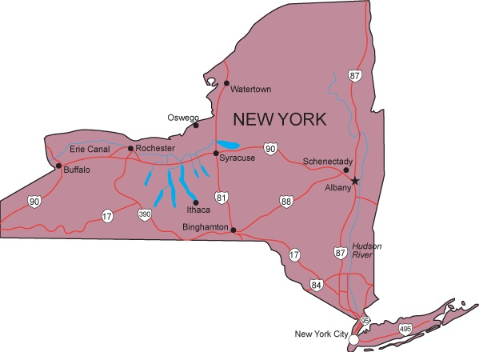

New York
The Empire State
Must-See Places
- Statue of Liberty
- Times Square
- Central Park

Facts about New-york Citys
- Five Boroughs: New York City is made up of five boroughs: Manhattan, the Bronx, Brooklyn, Queens, and Staten Island.
- Diverse Residents: NYC is known for its diversity, shaped by waves of immigration from Europe, Asia, Latin America, and Africa since the late 1800s. This history has transformed the city into a melting pot of cultures.
- Federal Reserve Bank of New York: The Federal Reserve Bank of New York holds the largest gold reserve in the world, with about 5,620 metric tons stored in its vault.
- Empire State Building: Once the tallest building in the world, the Empire State Building stands at 1,454 feet tall and is still one of the most iconic structures in New York City.
- Central Park: Central Park, covering 843 acres, is one of the most famous parks in the world. It features sights like the Bethesda Fountain, Sheep Meadow, and Shakespeare Garden.
- Subway System: New York City's subway is the largest rapid transit system in the world, stretching over 850 miles and being one of the safest and longest in the world.
- Bridges: The city is home to over 2,000 bridges and tunnels, including four world-famous suspension bridges: the Brooklyn Bridge, Williamsburg Bridge, Verrazzano-Narrows Bridge, and George Washington Bridge.
- Bird-Watching Capital: NYC is the bird-watching capital of the U.S., with 495 bird species, including 248 breeding species, found in the city.
- New York Public Library: The NYC Public Library, which opened in 1895, is the fourth-largest library in the world, holding over 55 million books and materials.
- Millionaires: New York City has 339,200 millionaires, making it home to one of the highest concentrations of wealthy individuals in the world.
Explore: NYC Facts